民芸品博物館/メキシコシティ Museo de Arte Popular/CDMX
メキシコシティの博物館巡り、お次は中心部にある
民芸品博物館 Museo de Arte Popular へ。
メキシコ各部族の民芸品を紹介している博物館だ。
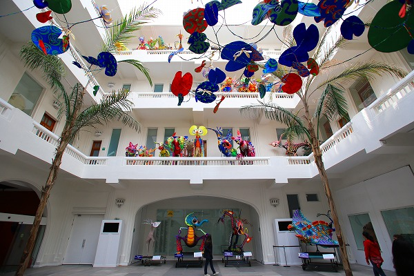
入館すると吹き抜けの広いスペースにカラフルな人形が並んでいる。
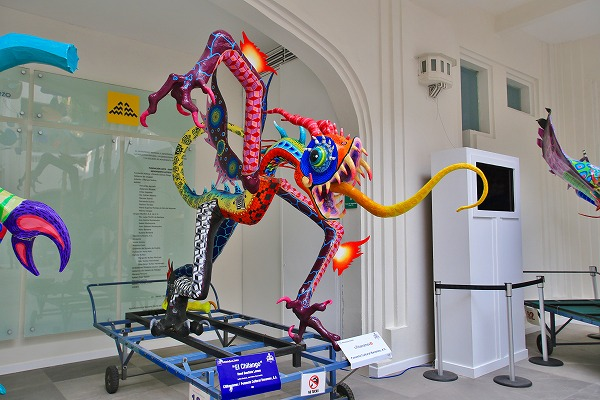
祭りに使われるモノなのだろうか。
大型の人形がたくさん並んでいる。
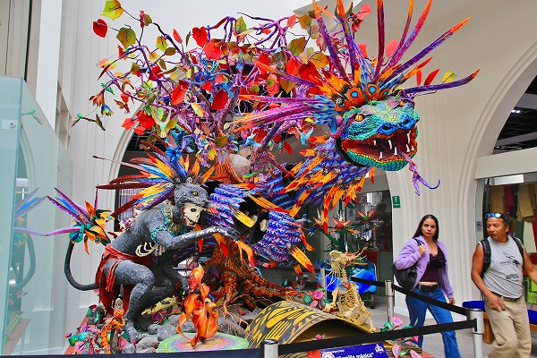
それにしてもこの色遣いはどうでしょう。
細工の細かさといい、色数の多さといい留まるところを知らないのが最高な訳ですよ。
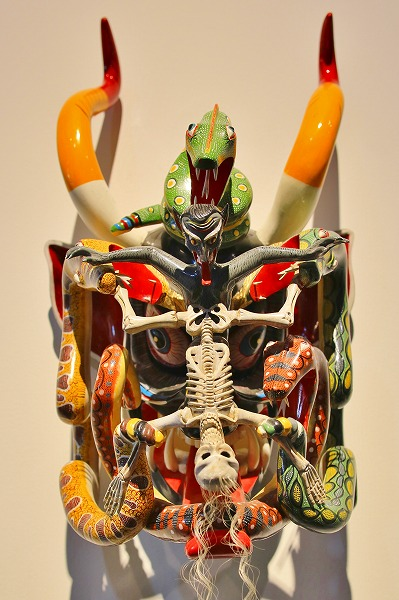
仮面。
何がどうしてこうなるのかが不思議。
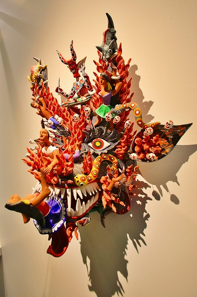
この
やり過ぎ感こそメキシコの持つ魅力の本質のような気がする。
バロック教会や民芸品の装飾や色遣いのやり過ぎ度合、信仰の度合いのやり過ぎ具合、そして人々の感情表現のやり過ぎ具合…。
全てにおいてトゥーマッチな感じが私にとっては堪らなく心地よかったような気がする。
こんなの見て日本に帰ったら、もう、何を見てもモノクロームにしか見えないよなー、
…などと思いつつ色と装飾の洪水にただただ身を委ねるのでありました…。
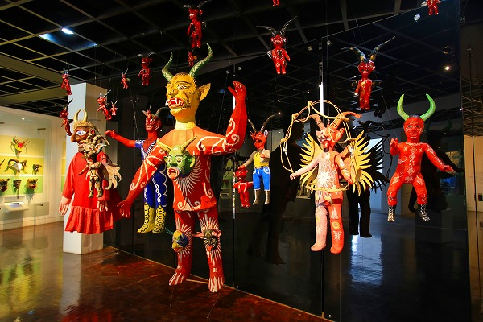
祭りに登場する悪魔。
どれも強烈な姿だ。
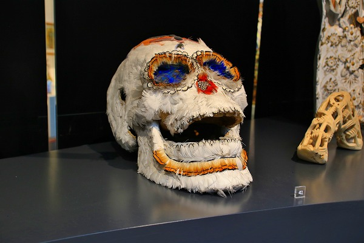
鳥の羽で覆われた骸骨。
御存じとは思うがメキシコにおいて
頭蓋骨は非常に重要なデザインアイテムだ。
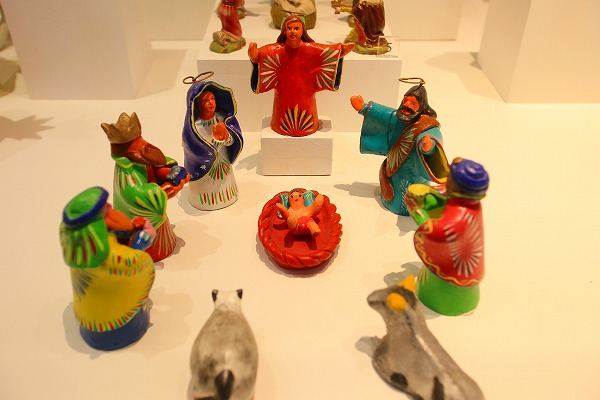
生と
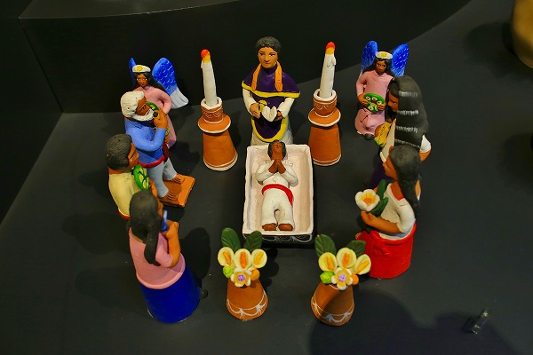
死と
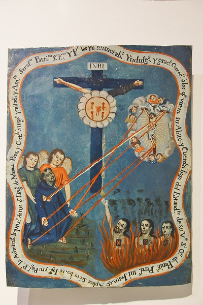
面白すぎて中々先に進めない。
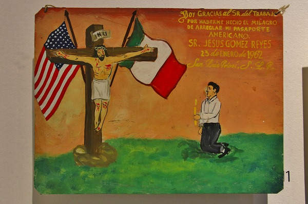
エクスヴォトもあった。
なるほどこれも民芸品の一種だもんね。
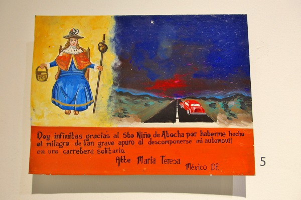
誰もいない道で車が故障したときに神様に助けてもらったそうです。
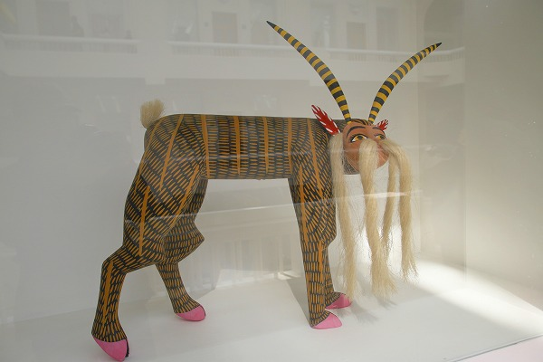
鼻毛と耳毛が凄い動物。
このような細かい細工が施された動物の人形はアレブリヘといい、主にオアハカで作られている。
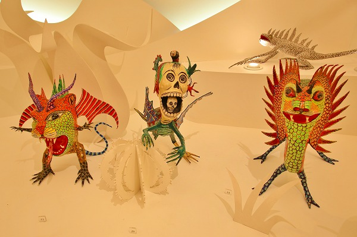
こういうメキシコのやりすぎ民芸品は見ているだけでも楽しいなあ。
造形のアイデアの絞り出しっぷりが凄い！
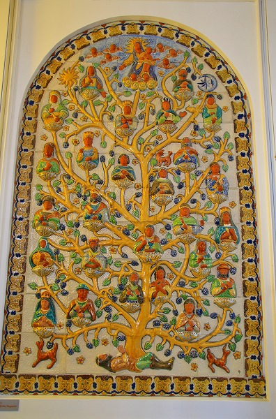
オアハカの
サントドミンゴ教会の天井にもあった生命の樹。
一人の身体から大勢の命が育まれている様子をタイルで表した力作。
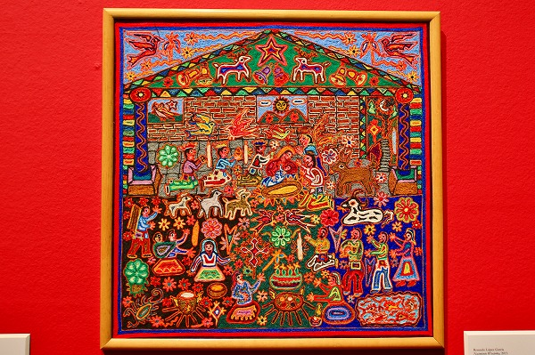
これは
ウイチョル族のニエリカと呼ばれる絵画。
絵画、といっても全部毛糸を貼って作られている。
ウイチョル族はメキシコ西部に居住し、独特の細密装飾を得意とする部族だ。
滅茶苦茶サイケデリックな絵柄が多いのだが、それもそのはず。
幻覚サボテン（ペヨーテ）を食べて
軽くトリップした状態で見た幻影をそのままニエリカとして表現するのだ。
どぎつい色彩と細密な描写は高い評価を受けており、この旅度の間、あちこちでウイチョルの民芸品を見たが、どれもかなりお高めだった。
そしてウイチョル族のもうひとつの十八番と言えばビーズ細工。
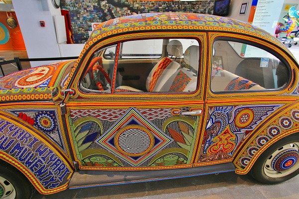
何とビーズ装飾で埋め尽くされたフォルクスワーゲンのビートルが展示されていた。
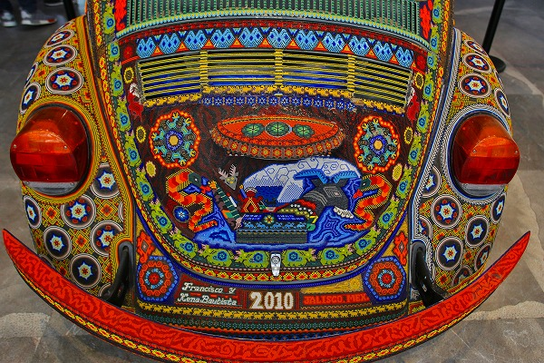
まさに走る工芸品。
圧倒されっぱなしの展示だった。
…メキシコの面白い所は、このような博物館に展示されているような
超絶技巧の民芸品が街の市場などに行くと買える事。
もちろん高級品であるオアハカのアレブリヘやウイチョルのニエルカなどはそれなりのアートギャラリーでないと出会えないが、少なくとも現代でも職人がいて販売されているのだ。
実際私も各地でそのようなギャラリーで何度も素晴らしい民芸品に遭遇した。
普段、旅先で滅多に買物をしない私ですらその民芸品の
あまりのレベルの高さに買うか買うまいか何度も悶絶したものだ。
（結局、スゲー買ったけど）
それほどメキシコの民芸品は段違いに魅力的なのだ。
さすがにビーズ尽くしのワーゲンはどこにも売ってなかったけどねー。
次の修行へGOGOGO！